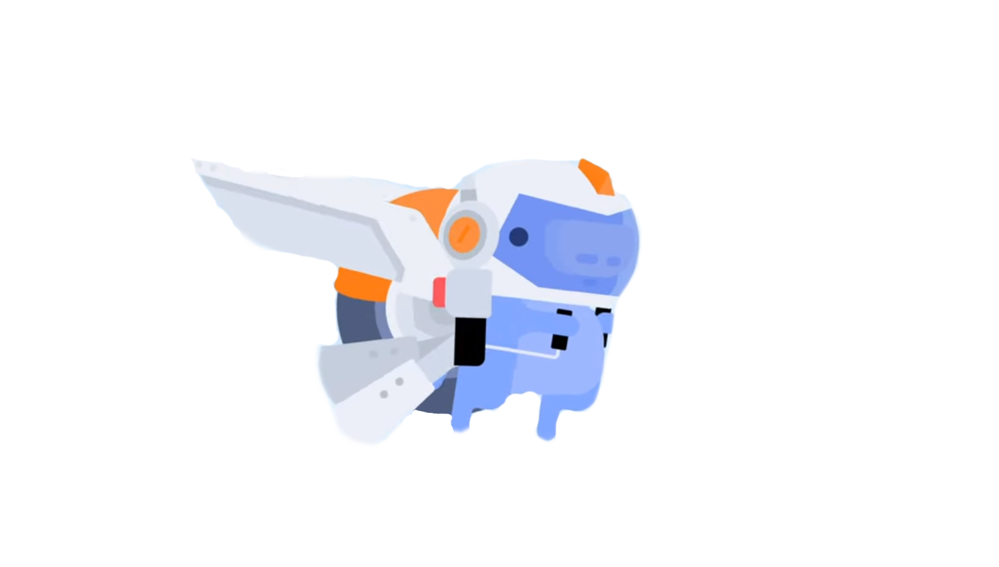

History
The Idea
The concept of Discord came from Jason Citron, who had founded OpenFeint, a social gaming platform for mobile games. He used to found Hammer & Chisel, a game development studio, in 2012. Their first product was Fates Forever, released in 2014, which Citron anticipated to be the first MOBA game on mobile platforms. However, during the development process, Citron noticed how difficult it was for his team to work out tactics in games like Final Fantasy XIV and League of Legends using available voice over IP (VoIP) software. He found that some VoIP options required players to type in IP addresses just to connect, while others were resource-heavy and had known security problems. This led the developers to develop a chat service that was much friendlier to use and based on more modern technology.
The Beginning
To develop Discord, Hammer & Chisel gained additional funding from YouWeb's 9+ incubator, which had also funded the startup of Hammer & Chisel, and from Benchmark capital and Tencent. Discord was publicly released in May 2015 under the URL discordapp.com. According to Citron, the only area that they pushed Discord into was for the Reddit communities, finding that many subreddit forums were replacing IRC servers with Discord ones. Discord became popular among esports and LAN tournament gamers, and other Twitch streamers.
The Breakthrough
The company raised an additional US$20 million in funding for the software in January 2016. This included an investment from American multinational mass media and entertainment conglomerate WarnerMedia. In 2019 they sold their share after WarnerMedia Investment Group was shut down following the AT&T acquisition. In December 2018 the company announced it raised $150 million in funding at a $2 billion valuation. The round was led by Greenoaks Capital with participation from Firstmark, Tencent, IVP, Index Ventures and Technology Opportunity Partners. In March 2020, Discord changed its motto from "Chat for Gamers" to "Chat for Communities and Friends". This was part of their response to an increase of users as a result of the 2019-20 COVID-19 outbreak, which also included the introduction of server templates. In May 2020, Discord changed its primary domain from discordapp.com to discord.com.
The famous discord-logo is a bot called Clyde. Discord has never officially stated what it is meant to represent and is left up to the interpretation of the community and the user. The community has suggested that the controller foundation is there to link the company back to its gaming roots, and the smiley face has the sole purpose of being fun and playful, just like the brand.